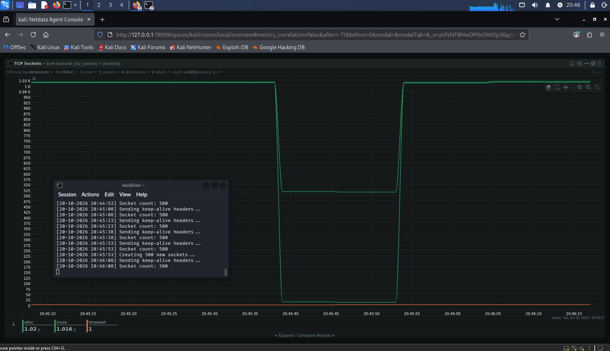
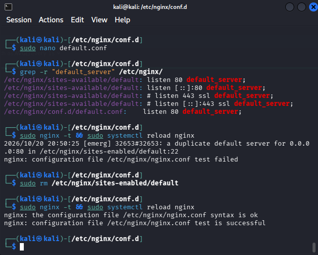
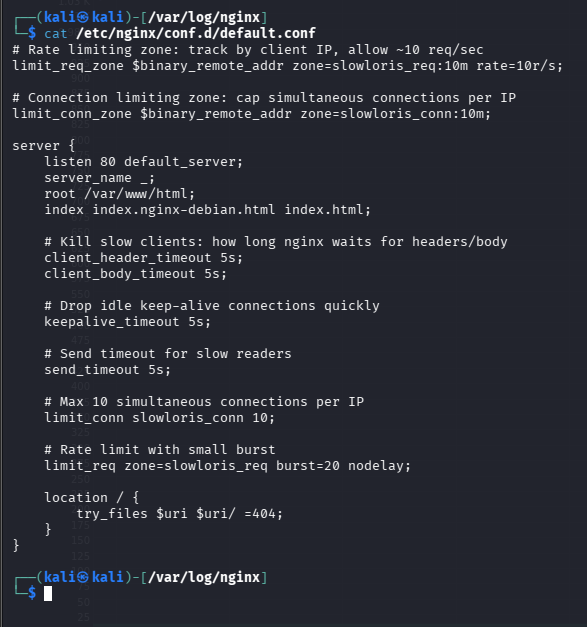
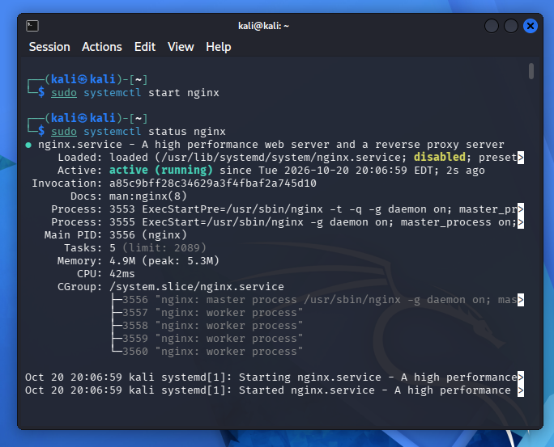
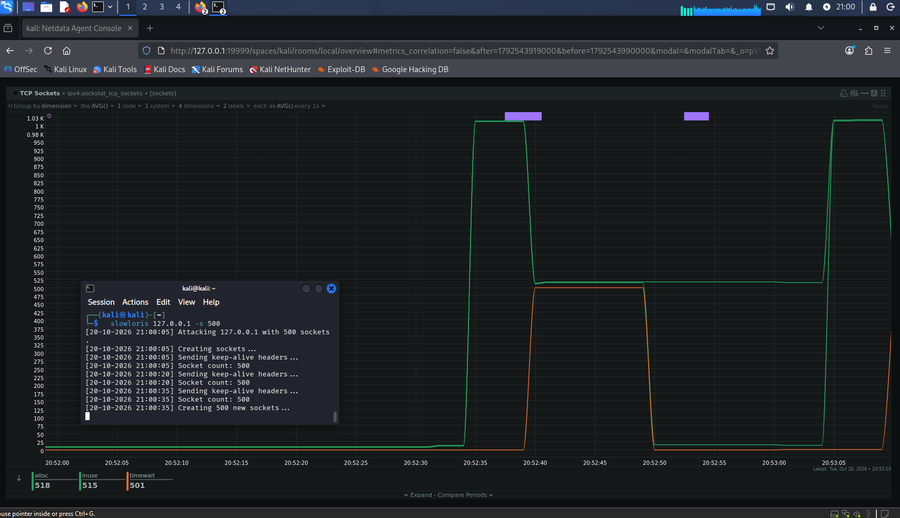

A blue-team project built around one application-layer DoS attack: run Slowloris against a local nginx server, watch it exhaust the connection pool, then harden the config so the same attack falls flat. The last step is forensic, two packet captures, one from a protected server and one from a vulnerable one, and figuring out which is which from the traffic alone.
Objective
- Run a Slowloris attack against nginx and observe connection exhaustion in Netdata
- Add nginx mitigation rules (timeouts, connection and rate limits) and prove they defeat the attack
- Compare the TCP socket behavior before and after hardening
- Analyze two packet captures in Wireshark to attribute which server was protected
How Slowloris works
Slowloris is a low-bandwidth attack. Instead of flooding the server with traffic, it opens hundreds of connections and sends HTTP headers a few bytes at a time, deliberately slowly, never finishing the request. nginx politely waits for each one to complete, so every connection slot fills with a stalled client and real users can't get in. Because each request looks like ordinary HTTP, volumetric defenses that watch for traffic spikes miss it entirely. The fix isn't more bandwidth, it's refusing to hold a connection that won't make progress.
Attack 1, unprotected
With default nginx, I launched the attack with 500 sockets:
slowloris 127.0.0.1 -s 500. The TCP socket count climbed straight
to the ceiling (~1K sockets, counting both ends of each loopback connection)
and held there flat for the duration. That plateau is the server saturated,
every slot occupied, nothing freeing up.

Unprotected: sockets pinned at the ceiling and held. nginx accepts every slow connection and waits, so the pool never recovers while the attack runs.
Hardening nginx
The mitigation went into a dedicated /etc/nginx/conf.d/default.conf.
The directives that actually kill Slowloris are the short header and body
timeouts (nginx hangs up on any client that dribbles its request past five
seconds) backed by a per-IP connection cap and request rate limit so a single
source can't monopolize the pool.

The hardened config. client_header_timeout 5s is the Slowloris killer, limit_conn caps connections per IP, and limit_req rate-limits requests.
Enabling it surfaced a conflict: both the new config and the stock
sites-enabled/default claimed port 80 as default_server,
so nginx refused to load with a duplicate default server error.
Removing the stock symlink left my hardened block as the sole server on port 80,
and the config test passed.

Resolving the duplicate default_server clash, remove the stock site symlink, then nginx -t comes back clean.

nginx back up and running with the hardened config loaded.
Attack 2, protected
Same attack, same 500 sockets. This time the graph tells a completely different
story. Connections still spike, Slowloris opens its batch in a fast burst before
the timeout can act, but then nginx's five-second deadline fires and mass-kills
the stalled connections, dropping the count toward zero. Slowloris rebuilds, nginx
kills them again, producing a sawtooth instead of a plateau. The legend tells the
whole story: timewait 501, roughly 500 sockets in the TIME_WAIT
cleanup state, meaning nginx just closed that many connections. On the unprotected
run, timewait stayed near zero because nginx closed nothing.

Protected: the sawtooth is nginx culling stalled connections on its own schedule. Slots keep freeing up, so the server stays responsive. Note timewait 501, proof of the mass teardown.
The real difference isn't whether connections open, it's who controls when they die. Unprotected, the attacker decides and the server is a passive host holding slots hostage. Protected, the server enforces its own deadline and refuses to be held.
Reading the packet captures
The forensic stretch: two .pcap files, one protected server and one
vulnerable, identify each from traffic alone. Filtering on
tcp.flags.reset == 1 settled it. Capture A was full of RST packets,
the server forcibly tearing down connections that failed to complete their headers
in time, the exact packet-level signature of the timeout mitigation. Capture B had
zero resets: that server never closed the stalled connections and instead held them
open, which is how a vulnerable server behaves under Slowloris. The TCP conversation
data backed it up, A's connections were short-lived and sparse (many connections, a
packet or two each, killed fast), consistent with a server actively dropping slow
clients. A is the mitigated server, B is the vulnerable one.
Tools used
- nginx, configuring timeout,
limit_connandlimit_reqmitigation rules - Slowloris, generating the application-layer attack traffic
- Netdata, live monitoring of TCP socket state during each attack
- Wireshark, filtering on TCP flags to attribute protected vs. vulnerable captures
Key takeaway
Application-layer DoS is a configuration problem before it's a bandwidth problem. Slowloris wins against defaults not because it's heavy but because it exploits a polite server's willingness to wait. The entire defense came down to a handful of directives that enforce resource boundaries the server already controls, and the same hardware went from dead to self-healing on config alone. Reading it afterward in a packet capture, telling "under attack" from "handling an attack" by who's sending the resets, is the kind of attribution work that turns a monitoring alert into an actual finding.